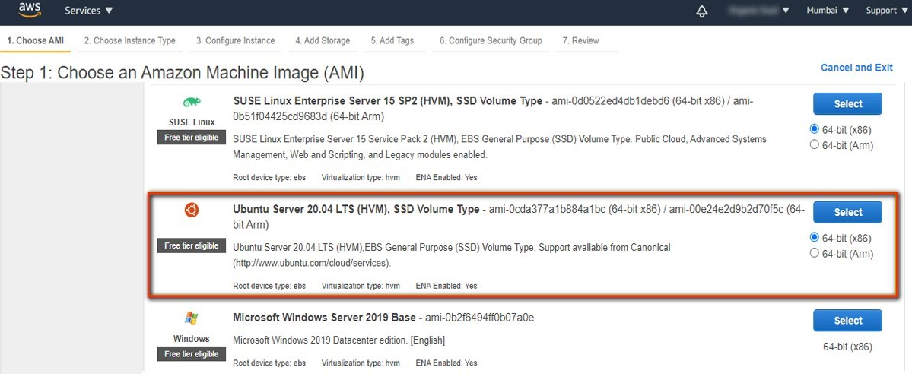

Avantages de Cloud Computing
Cloud computing fournit un moyen d'accéder à diverses ressources informatiques via Internet. Ces ressources incluent des serveurs, du stockage, des bases de données, des réseaux, des logiciels, et plus encore. Les principaux objectifs de l'informatique en Cloud sont les suivants :
- Scalabilité : Évoluer facilement les ressources à la hausse ou à la baisse en fonction de la demande.
- Efficacité des coûts : Payer uniquement pour les ressources utilisées, réduisant ainsi les dépenses en capital.
- Flexibilité : Accéder aux ressources de n'importe où avec une connexion Internet.
- Reliabilité : Bénéficier d'une infrastructure robuste avec une haute disponibilité et des options de reprise après sinistre.
- Speed: Déployer et gérer des applications rapidement sans avoir besoin de matériel sur site.
Différents fournisseurs de cloud
Plusieurs grands fournisseurs de cloud offrent une large gamme de services cloud. Certains des fournisseurs de cloud les plus populaires sont :
- Amazon Web Services (AWS) : Une plateforme cloud complète et largement adoptée offrant plus de 200 services complets à partir de centres de données mondiaux.
- Microsoft Azure : Une collection croissante de services cloud intégrés et de ressources informatiques tels que l'analyse, le stockage et les réseaux.
- OVH - "On Vous Héberge" : une entreprise française spécialisée dans les services de cloud computing, d'hébergement web et de serveurs dédiés. Fondée en 1999, OVH propose une large gamme de services, notamment des infrastructures de cloud public et privéet des outils pour la gestion des données. OVH est devenue l'un des plus grands fournisseurs de services d'hébergement en Europe et propose une large gamme de solutions pour les entreprises de toutes tailles.
- Google Cloud Platform (GCP) : Offre une suite de services de cloud computing qui fonctionnent sur la même infrastructure que Google utilise en interne pour ses produits destinés aux utilisateurs finaux.
- IBM Cloud : Fournit une plateforme cloud complète avec plus de 170 produits et services couvrant les données, les conteneurs, l'IA, l'IoT et la blockchain.
- Oracle Cloud : Offre une pile complète et entièrement intégrée d'applications cloud et de services de plateforme.
Deployé une application vers Cloud
Exemple des etapes à suivre en utilisant AWS Cloud :
- Connexion à la console AWS : Connectez-vous à la console de gestion AWS.
- Lancement de l'instance : Accédez au service EC2 et cliquez sur "Lancer une instance".
- Choix de l'AMI (Amazon Machine Image): Sélectionnez une image de machine Amazon préconfigurée, comme Amazon Linux 2 AMI.
- Choix du type d'instance : Sélectionnez le type d'instance, comme t2.micro, qui est éligible à l'offre gratuite AWS.
- Configuration des détails de l'instance : Configurez les paramètres de l'instance selon vos besoins.
- Configuration des balises : Ajoutez des volumes de stockage supplémentaires si nécessaire.
- Configuration des balises : Ajoutez des balises pour organiser vos instances.
- Configuration du groupe de sécurité : Configurez les règles de pare-feu pour permettre le trafic HTTP et HTTPS.
- Revue et lancement : Passez en revue les paramètres de votre instance et lancez l'instance.
